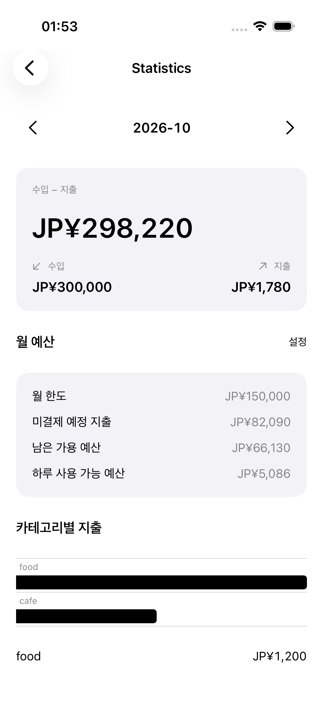
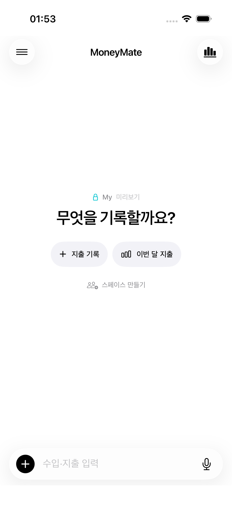
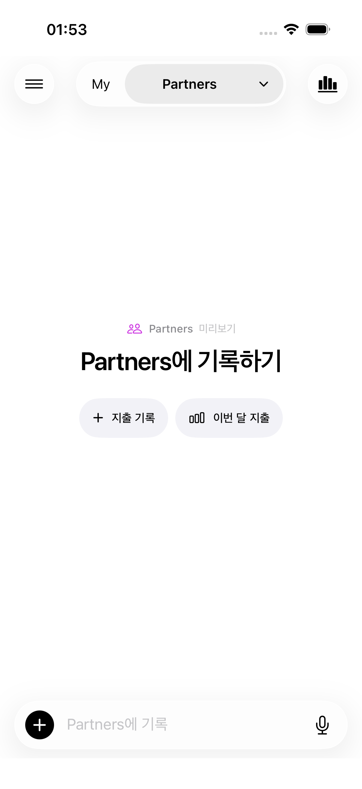
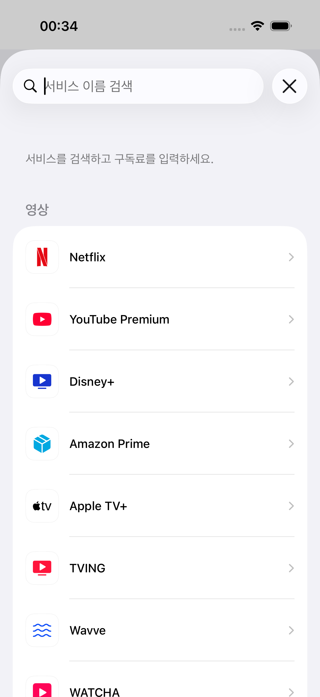

01支出の記録と今月の確認を
支出の記録と今月の確認を
最初に表示する。
大きな説明カードを取り除き、支出の記録と今月の確認を入口に。入力欄は画面の下に置きました。
チャットを中心に、個人の支出も、誰かと使うお金も。



入力の中心はチャット。履歴、カレンダー、統計、定期支出は必要なときに開ける構造にしました。
大きな説明カードを取り除き、支出の記録と今月の確認を入口に。入力欄は画面の下に置きました。
Myと共有スペースを上部で切り替え。本文のタイトルと入力欄にも選択中の名前を表示しました。
定期支出はサービス検索から開始。ブランドの名前とアイコンで選び、料金・通貨・次回の支払日を設定します。

iOSアプリを実装し、内部TestFlightで検証中。キーボード表示、改行、メニュー操作、スペース切替を確認しています。
掲載画面は開発版のプレビューです。金額と共有スペースはサンプルデータを使用しています。